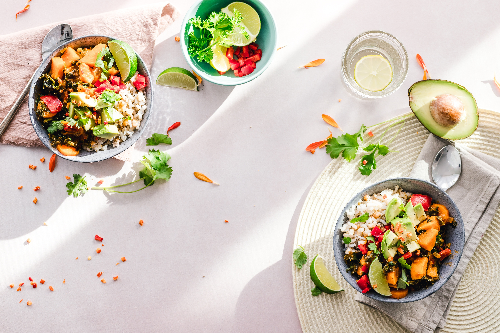
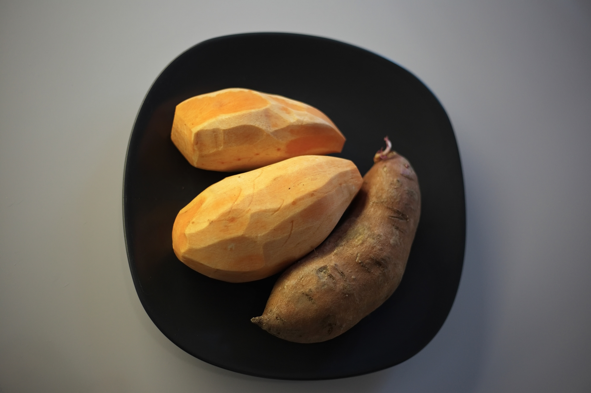
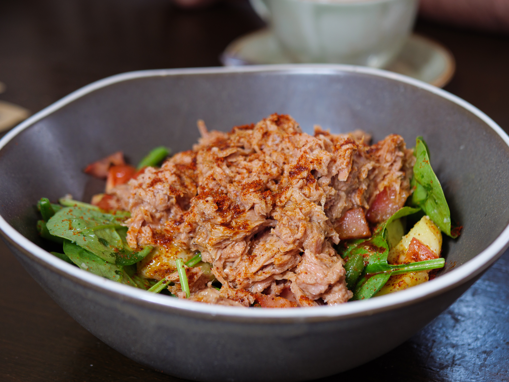
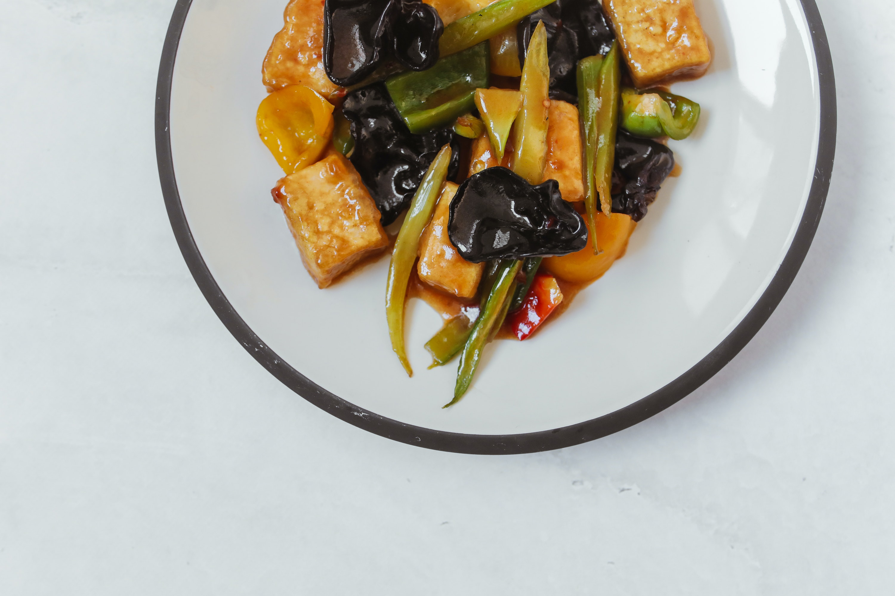

Grilled Lemon Chicken with Roasted Vegetables

- Chicken Breast
- Vegetables of choice
- Olive oil
- Thyme
Directions:
Preheat oven to 400°F (200°C). Toss a variety of vegetables (such as bell peppers, zucchini, and onions) with a little olive oil and sprinkle with salt and pepper. Roast for 20-25 minutes. While the vegetables are roasting, grill a skinless chicken breast that has been marinated in lemon juice, garlic, and thyme until cooked through. Serve with the roasted vegetables.
Quinoa Salad with Shrimp and avocado
- 2 cups quinoa
- 1 ripe avocado
- 1 tomato
- 1/2 lime
- 1 cucumber
- 1 tb honey
- salt to taste
- 1/2 lb shrimp
Directions:
Cook quinoa according to package instructions and let cool. Mix cooked quinoa with diced avocado, cherry tomatoes, chopped cucumber, and cooked shrimp. Dress the salad with a mixture of olive oil, lime juice, honey, and salt.
Turkey and Sweet Potato Skillet
- 1/2 lb ground turkey
- 1 sweet potato
- 1 tbsp minced garlic
- 1 onion
- 1 tsp paprika
- 1 tsp cumin
Directions:
Heat a little olive oil in a skillet and sauté ground turkey until browned. Add diced sweet potato, minced garlic, and diced onion to the skillet and continue cooking until the sweet potato is tender. Season with smoked paprika, cumin, and salt to taste.
Tuna and White Bean Salad
- 1 can tuna
- 1 can white beans
- parsley
- 1 tbsp olive oil
- 1 tsp red wine vinegar
- 1 tsp dijon mustard
Directions:
Rinse and drain a can of white beans and mix with canned tuna, chopped celery, diced red onion, and chopped parsley. Dress the salad with a mixture of olive oil, red wine vinegar, Dijon mustard, and salt.
Stir-Fry Vegetables and Tofu
- 1 block firm tofu
- Vegetables of choice
- 1 tbsp soy sauce
- 1 tbsp ginger
- 1 tbsp garlic
Directions:
Cut firm tofu into cubes and sauté in a little oil until golden brown. Remove from the skillet and set aside. Add a variety of chopped vegetables (such as bell peppers, broccoli, and carrots) to the skillet and stir-fry until tender. Add the tofu back to the skillet and season with soy sauce, ginger, and garlic.